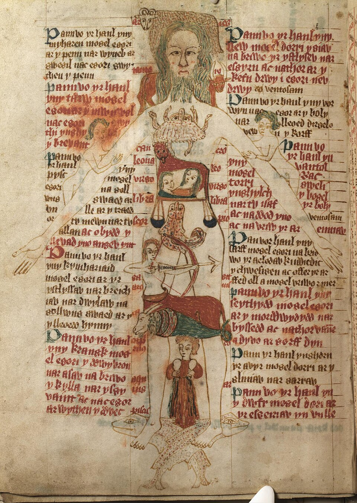
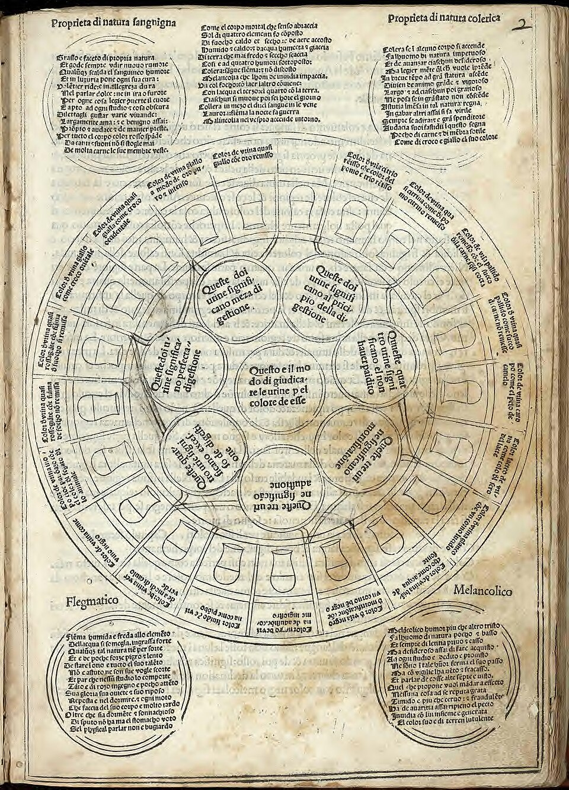
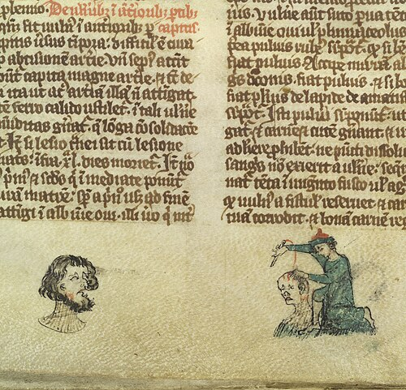
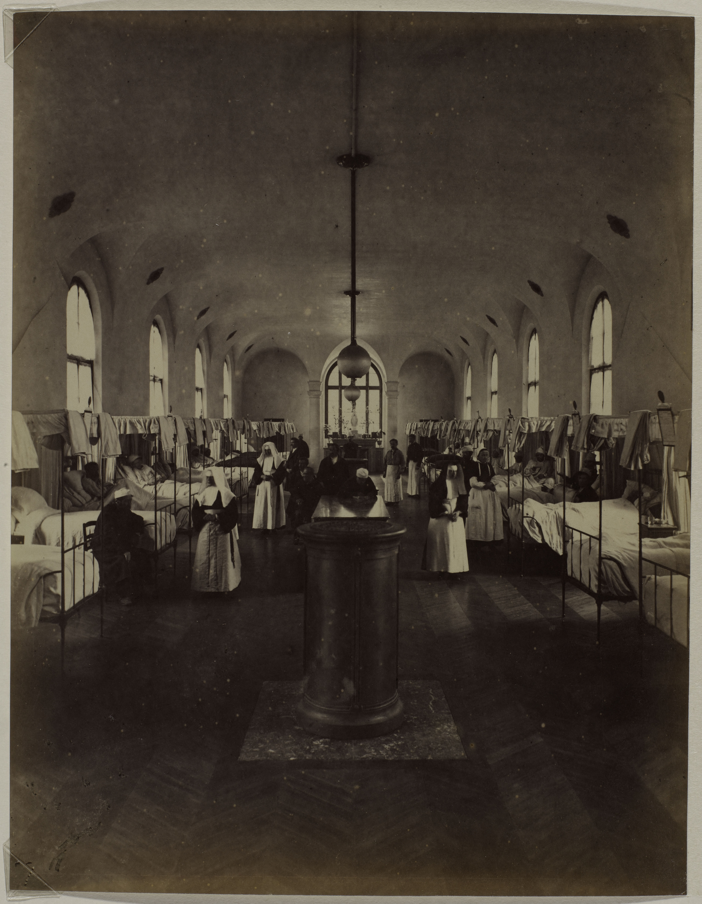

Medieval
Paper 1: Medicine Through Time with the Western Front
Course Textbook
Enquiry: How has medicine changed from c1250 to the modern day?
Contents
|
Lesson 1: KT1.1: Supernatural & Religious Explanations of Disease (c1250–c1500)
|
|
|
Lesson 2: KT1.2: Rational Explanations: Hippocrates, Galen & The Four Humours (c1250–c1500)
|
|
|
Lesson 3: KT1.3: Approaches to Prevention & Treatment: Rituals, Bleeding & Purging (c1250–c1500)
|
|
|
Lesson 4: KT1.4: Medical Care Providers & Monastic Hospitals: ‘Care Not Cure’ (c1250–c1500)
|
|
|
Lesson 5: KT1.5: Case Study: Dealing with the Black Death (1348–1349)
|
|
L1: KT1.1: Supernatural & Religious Explanations of Disease (c1250–c1500)[[SRC_MARKER:L0_Start]]
Learning Objectives
Explain supernatural and religious explanations for the cause of illness.
Analyse how the Church enforced Galenic orthodoxy and suppressed scientific dissent.
Spaced Retrieval Do Now: Foundations of Medicine
1. Which ancient civilization first introduced the idea of natural, humoural balance?
2. Name the ancient Roman physician who created the Theory of Opposites.
3. What four bodily fluids did the humoural theory claim dictated human health?
4. What term was used for corrupt, foul-smelling air believed to cause disease?
Vocabulary Check
The Odd One Out: Circle ONE term that does not belong with the others. Explain your reasoning: What historical connection links the other terms, and why is your chosen term different?
| | | |
Teacher Model / Pupil Reasoning:
[[SRC_MARKER:L0_Source_0]]
Source S1: Medieval Church Interior with Altar & Doom Painting (14th c.)

A medieval parish church interior showing the elevated altar and the vivid Doom painting above the chancel arch depicting Heaven and Hell.
Q1 Look at Source A above: Study the central position of the altar and the depiction of the Last Judgment (Doom painting). Why did the medieval Church teach that illness was sent directly by God as a punishment for sin, and how did this belief discourage people from searching for physical causes of disease?
[[SRC_MARKER:L0_Source_1]]
Source S2: The 'Zodiac Man' (Homo Signorum, c.1380)

The Zodiac Man (Homo Signorum) showing the 12 astrological signs that medieval physicians believed governed different bodily organs.
Q2 Look at Source B above: Notice how each astrological constellation rules a specific part of the human body (such as Aries governing the head and Pisces governing the feet). Why did medieval physicians carry pocket almanacs and consult the position of the moon before performing bloodletting or surgery on a patient?
[[SRC_MARKER:L0_Source_2]]
Source S3: Medieval Church Interior with Altar & Doom Painting (14th c.)
A medieval parish church interior showing the elevated altar and the vivid Doom painting above the chancel arch depicting Heaven and Hell.
Q3. Look at Source A above: Study the central position of the altar and the depiction of the Last Judgment (Doom painting). Why did the medieval Church teach that illness was sent directly by God as a punishment for sin, and how did this belief discourage people from searching for physical causes of disease?
[1.1] In medieval England (c1250–c1500), the Roman Catholic Church exercised near-total control over intellectual life, education, and social values. Formal education was an ecclesiastical privilege; cathedral schools and universities like Oxford and Paris were staffed entirely by clergy. Most crucially, book production was concentrated inside monastic scriptoria, where monks hand-copied manuscripts. Because every text required months of laborious transcription, the Church acted as an unyielding censor, deciding which books were preserved and which were suppressed.
[1.2] Medical teaching was strictly theoretical and anchored to Latin scripture. The Church taught that the physical world was merely a temporary, imperfect realm governed by divine will. Consequently, understanding the universe did not require physical dissection or laboratory experiments; it required studying holy scripture and classical treatises approved by the Pope. To question established teaching was not merely an academic error—it was an act of heresy against God.
[2.1] Because the Church taught that God controlled every aspect of health, sickness was universally interpreted as a spiritual condition. Sudden illness was seen as divine retribution—a punishment sent by God for personal sins such as greed, gluttony, or heresy, or as a divine test of a Christian’s faith and devotion (similar to Job in the Old Testament). Recovery was regarded as a miracle granted through prayer, confession, and repentance, rather than the result of medical skill.
[2.2] The most vivid illustration of divine punishment was leprosy. Mentioned prominently in the Bible, leprosy was regarded as a physical manifestation of inner moral corruption and sin. Sufferers were socially ostracised; they underwent a symbolic funeral service before being banished to specialized Lazar houses built outside city walls. When forced to travel, lepers had to wear concealing grey cloaks, keep to the middle of the road, and continuously ring a handheld bell while crying out for alms, warning healthy citizens to avoid their breath.
[[SRC_MARKER:L0_Task_1_0]]Q4. Using paragraphs [2.1]–[2.2], explain how religious beliefs dictated the social treatment of leprosy sufferers.
[[SRC_MARKER:L0_Source_4]]
Source S4: The 'Zodiac Man' (Homo Signorum, c.1380)
The Zodiac Man (Homo Signorum) showing the 12 astrological signs that medieval physicians believed governed different bodily organs.
Q5. Look at Source B above: Notice how each astrological constellation rules a specific part of the human body (such as Aries governing the head and Pisces governing the feet). Why did medieval physicians carry pocket almanacs and consult the position of the moon before performing bloodletting or surgery on a patient?
[3.1] Alongside divine retribution, medieval people believed that human health was intimately governed by the alignment of the stars and planets. While early Church leaders initially condemned astrology as pagan fortune-telling, by the 14th century, astrological medicine was fully incorporated into university curricula and endorsed by European prelates. The cosmos was viewed as God’s vast clockwork creation; planets were believed to exert physical gravitational and mystical influences upon the earthly elements.
[3.2] When catastrophic epidemics struck, physicians pointed to unusual celestial configurations. Most famously, when the Black Death decimated Europe, scholars at the University of Paris officially declared that the plague was caused by the conjunction of Saturn, Jupiter, and Mars in the astrological sign of Aquarius in March 1345. This planetary alignment was believed to have drawn up poisonous vapors from deep within the earth, corrupting the air with deadly miasma.
[4.1] Why did the Christian Church adopt the medical treatises of Claudius Galen, a pagan doctor from 2nd-century imperial Rome? The crucial connection was teleology. Galen repeatedly argued in his treatises that every single bone, muscle, and organ in the human body had been purposefully crafted by a supreme, singular Creator. This design argument aligned so perfectly with Genesis and Christian creation theology that church leaders declared Galen’s anatomical writings infallible sacred truth.
[4.2] The consequence for European medicine was catastrophic stagnation. Questioning Galen became synonymous with questioning scripture. When rare university dissections of executed criminals were conducted, the physician sat high up in a raised chair reading aloud from Galen’s Latin text while an untrained barber cut the body; if a physical organ contradicted Galen, the corpse was dismissed as deformed. When the English Franciscan friar Roger Bacon argued around 1277 that scholars should stop relying on ancient authority and conduct firsthand empirical experiments, church authorities had him imprisoned. For over a millennium, medical progress was effectively criminalised.
[[SRC_MARKER:L0_Task_3_0]]Q6. Explain why the Catholic Church had such a powerful influence on medical ideas about the causes of disease in the period c1250–c1500.
L2: KT1.2: Rational Explanations: Hippocrates, Galen & The Four Humours (c1250–c1500)[[SRC_MARKER:L1_Start]]
Learning Objectives
Explain the Theory of the Four Humours and Galen’s Theory of Opposites.
Analyse miasma theory and medieval diagnostic methods (uroscopy).
Spaced Retrieval Do Now: Religion & Authority
1. Why did the medieval Catholic Church actively promote the medical texts of Galen?
2. What punishment did the English friar Roger Bacon receive in 1277 for advocating experiments?
3. Where were leprosy sufferers banished to in medieval society?
4. What did people believe caused the Black Death in March 1345?
Vocabulary Check
The Golden Sentence: Choose TWO terms from the word bank. Write ONE grammatically sophisticated, historically accurate sentence connecting them using a causal conjunction (because, although, or consequently):
| | | |
Teacher Model / Pupil Sentence:
[[SRC_MARKER:L1_Source_0]]
Source S1: The Four Humours Wheel (Tacuinum Sanitatis, 14th c.)

The Four Humours Wheel: Blood (air/hot & wet), Phlegm (water/cold & wet), Yellow Bile (fire/hot & dry), and Black Bile (earth/cold & dry).
Q1 Look at Source A above: Study how each of the four humours (Blood, Phlegm, Yellow Bile, Black Bile) is linked to a season, an element, and specific qualities of heat and moisture. If a patient suffering from a cold and shivering was treated with hot spices and dry foods under Galen’s Theory of Opposites, why did this belief in internal fluid balance prevent medieval physicians from searching for external causes of disease?
[[SRC_MARKER:L1_Source_1]]
Source S2: Physician Inspecting Urine Flask (Fasciculus Medicinae, 1491)

The Medieval Urine Chart: a radial wheel showing twenty flasks of differing colours, which physicians examined, smelled, and sometimes tasted to diagnose humoural imbalance.
Q2 Look at Source B above: Observe the physician holding up a glass matula (urine flask) to inspect the color, sediment, and clarity of the liquid against a radial wheel. How did uroscopy allow medieval doctors to diagnose internal humoural imbalance without performing surgery or human dissection?
[[SRC_MARKER:L1_Source_2]]
Source S3: The Four Humours Wheel (Tacuinum Sanitatis, 14th c.)
The Four Humours Wheel: Blood (air/hot & wet), Phlegm (water/cold & wet), Yellow Bile (fire/hot & dry), and Black Bile (earth/cold & dry).
Q3. Look at Source A above: Study how each of the four humours (Blood, Phlegm, Yellow Bile, Black Bile) is linked to a season, an element, and specific qualities of heat and moisture. If a patient suffering from a cold and shivering was treated with hot spices and dry foods under Galen’s Theory of Opposites, why did this belief in internal fluid balance prevent medieval physicians from searching for external causes of disease?
[1.1] While religion explained why God permitted illness, medieval doctors needed a naturalistic, physical framework to explain how disease functioned inside the body. For this, European universities relied upon the ancient Greek physician Hippocrates (c. 460–c. 370 BC). Hippocrates made a revolutionary contribution by rejecting demonic possession and witchcraft, arguing instead that health and disease were entirely natural phenomena governed by bodily fluids.
[1.2] Hippocrates posited that the human body contained four primary liquids, termed the Four Humours: Blood (produced by the liver; associated with spring, air, and being hot and wet); Phlegm (produced by the brain and lungs; associated with winter, water, and being cold and wet); Yellow Bile or Choler (produced by the gall bladder; associated with summer, fire, and being hot and dry); and Black Bile or Melancholy (produced by the spleen; associated with autumn, earth, and being cold and dry). Good health required all four humours to remain in harmonious balance. If an individual developed an excess of one humour, or if a humour became putrefied, physical illness immediately resulted.
[2.1] In the 2nd century AD, the Roman imperial physician Claudius Galen expanded Hippocrates’ humoural theory into a comprehensive clinical treatment methodology known as the Theory of Opposites (Contraria Contrariis Curantur). Galen argued that doctors should treat illnesses by counteracting the excessive qualities of the dominating humour with their direct opposites.
[2.2] Under this rational system, if a patient suffered from an excess of cold, wet phlegm (manifested as a shivering winter cold and sneezing), the physician prescribed warm, dry treatments such as eating hot chilli peppers, drinking ginger infusions, and resting by a roaring fire. Conversely, if a patient suffered from a high fever caused by an excess of hot, dry yellow bile or hot blood, the doctor prescribed cool cucumbers, cold baths, and bloodletting to lower internal heat. This system gave physicians a systematic logic for prescribing diets, herbal drinks, and purges.
[[SRC_MARKER:L1_Task_1_0]]Q4. Using paragraphs [2.1]–[2.2], explain how Galen’s Theory of Opposites worked in practice.
[3.1] Alongside internal humoural imbalance, the leading environmental explanation for epidemic disease was Miasma. Miasma was defined as corrupt, foul-smelling air filled with poisonous vapors. Medieval people believed that breathing in poisonous air directly corrupted the blood and unbalanced the humours inside the chest and heart. In medieval hospital and municipal records, this concept was described as "pestilential air," "corruption of the atmosphere," or "putrefaction."
[3.2] Miasma was believed to originate from stagnant marshes, open cesspits, unburied corpses, rotting animal carcasses, and dung heaps. Because bad smells were deeply associated with disease and sinfulness, medieval prevention heavily emphasized sweet odors. Wealthy citizens carried hollow pomanders filled with fragrant spices, held bunches of sweet herbs (posies) to their noses when walking through crowded streets, and burned aromatic incense in their homes.
[[SRC_MARKER:L1_Task_2_0]]Q5. Explain the connection between miasma theory and medieval attempts to prevent disease.
[[SRC_MARKER:L1_Source_5]]
Source S4: Physician Inspecting Urine Flask (Fasciculus Medicinae, 1491)
The Medieval Urine Chart: a radial wheel showing twenty flasks of differing colours, which physicians examined, smelled, and sometimes tasted to diagnose humoural imbalance.
Q6. Look at Source B above: Observe the physician holding up a glass matula (urine flask) to inspect the color, sediment, and clarity of the liquid against a radial wheel. How did uroscopy allow medieval doctors to diagnose internal humoural imbalance without performing surgery or human dissection?
[4.1] Because human dissection was forbidden, how did a university-trained medieval physician actually diagnose internal humoural imbalance? The cornerstone of clinical examination was Uroscopy (the inspection of urine). Physicians collected patient urine in a pear-shaped glass flask called a matula, designed to represent the shape of the human bladder. The doctor carefully examined the color, thickness, sediment, and smell of the sample, sometimes even tasting it, comparing it against a radial chart of 20 distinct urine shades.
[4.2] A deep red or golden urine indicated an excess of hot blood or choler; pale, watery white urine indicated an excess of cold phlegm. Doctors carried this chart inside their folding pocket Vademecum handbook alongside the Zodiac Man. While uroscopy involved empirical observation of physical bodily fluids, it completely locked doctors inside Galen’s flawed humoural framework. Because doctors assumed every symptom was caused by humours rather than bacteria or physical organ failure, patient diagnosis remained fundamentally inaccurate.
[[SRC_MARKER:L1_Task_3_0]]Q7. Explain one way in which ideas about the causes of illness in the Medieval period were similar to ideas about the causes of illness in the Renaissance period.
L3: KT1.3: Approaches to Prevention & Treatment: Rituals, Bleeding & Purging (c1250–c1500)[[SRC_MARKER:L2_Start]]
Learning Objectives
Analyse religious and supernatural methods of healing and prevention.
Explain rational humoural treatments: phlebotomy, purging, and herbal Theriac.
Spaced Retrieval Do Now: Humours & Diagnosis
1. What Greek physician originally created the Theory of the Four Humours?
2. Under Galen’s Theory of Opposites, how would a feverish patient be treated?
3. What did physicians examine in a glass matula to deduce humoural balance?
4. What did people believe corrupt miasma did upon inhalation?
Vocabulary Check
Conceptual Classification: Categorise the terms from the word bank into the two historical boxes below:
| | | |
Power, Governance & Warfare
Economy, Trade & Society
[[SRC_MARKER:L2_Source_0]]
Source S1: Phlebotomy / Bloodletting Manuscript (MS Sloane 1977, c.1300)

A medieval physician opening a vein in the arm using a fleam while blood drains into a bowl, supervised by an attendant.
Q1 Look at Source A above: Study the physician using a fleam (blade) to open a vein and collect blood in a bowl. Why did medieval people believe that releasing blood was an essential way to restore balance to the body and prevent fevers, even though it frequently weakened the patient?
[[SRC_MARKER:L2_Source_1]]
Source S2: Portrait of Claudius Galen (Engraving)

Claudius Galen (AD 129–c. 216), whose clinical treatises on the Theory of Opposites, phlebotomy, and purging dominated European medicine for 1,400 years.
Q2 Look at Source B above: Galen taught that the humours must be kept in constant equilibrium through balancing treatments. Why did his authoritative treatises lead doctors to prescribe violent purging (emetics and laxatives) alongside herbal compounds like Theriac, rather than searching for specific remedies for individual illnesses?
[1.1] Because illness was widely regarded as God’s punishment for sin, the first and most urgent response to sickness was spiritual. Sufferers were instructed to confess their sins to a parish priest and pray for divine forgiveness. The Church taught that without spiritual cleansing, physical treatments were entirely useless. Wealthy families paid for chanting monks to sing special intercessory Masses, while ordinary people fasted, gave alms to the poor, and lit votive candles before images of healing saints.
[1.2] Pilgrimages were among the most popular therapeutic actions in medieval England. Sick pilgrims walked hundreds of miles to shrines containing holy relics—such as the tomb of Saint Thomas Becket at Canterbury Cathedral, or the shrine of Our Lady at Walsingham. Sufferers touched reliquaries containing saints’ bones, drank holy water, or purchased lead pilgrim badges as talismans. Miraculous cures reported at shrines reinforced the belief that divine intervention was far more powerful than physical medicine.
[[SRC_MARKER:L2_Task_0_0]]Q3. Using paragraphs [1.1]–[1.2], explain why religious rituals were considered frontline medical treatments.
[[SRC_MARKER:L2_Source_3]]
Source S3: Phlebotomy / Bloodletting Manuscript (MS Sloane 1977, c.1300)
A medieval physician opening a vein in the arm using a fleam while blood drains into a bowl, supervised by an attendant.
Q4. Look at Source A above: Study the physician using a fleam (blade) to open a vein and collect blood in a bowl. Why did medieval people believe that releasing blood was an essential way to restore balance to the body and prevent fevers, even though it frequently weakened the patient?
[2.1] When physical treatments were administered, the most common and revered procedure was Phlebotomy (bloodletting). Based upon Galen’s belief that blood was the dominant, warmest humour and the primary cause of fevers, physicians ordered regular bloodletting to lower internal bodily heat and restore equilibrium. Phlebotomy was so routine that monasteries set aside specific "bleeding weeks" several times a year where all monks were bled for preventative maintenance.
[2.2] Phlebotomy was performed using three distinct surgical techniques. The most common was vein-opening using a sharp, double-edged lancet called a fleam, collecting up to a pint of blood in a marked pewter bowl. Alternatively, for localized inflammation, practitioners used Cupping: heating a glass cup over a flame and placing it over scratched skin, creating a vacuum that drew blood to the surface. Finally, Leeching was utilized for delicate areas like the face or piles; medicinal leeches were placed on the skin to engorge themselves on blood. While intended to heal, excessive bloodletting drastically lowered blood pressure, induced fainting, and frequently caused fatal hypovolemic shock in weakened patients.
[[SRC_MARKER:L2_Source_4]]
Source S4: Portrait of Claudius Galen (Engraving)
Claudius Galen (AD 129–c. 216), whose clinical treatises on the Theory of Opposites, phlebotomy, and purging dominated European medicine for 1,400 years.
Q5. Look at Source B above: Galen taught that the humours must be kept in constant equilibrium through balancing treatments. Why did his authoritative treatises lead doctors to prescribe violent purging (emetics and laxatives) alongside herbal compounds like Theriac, rather than searching for specific remedies for individual illnesses?
[3.1] If bloodletting failed to rebalance the humours, physicians turned to Purging to evacuate corrupted digestive fluids. The digestive system was viewed as an internal furnace; if food putrefied, it generated toxic yellow and black bile. Doctors administered powerful emetics containing antimony or dried crushed beetles to induce violent vomiting. Alternatively, strong herbal laxatives made from scammony, senna, and hellebore were given to cause explosive diarrhoea, or clysters (enemas) were pumped into the rectum using pigs’ bladders and reeds.
[3.2] Herbal medicine was the primary pharmaceutical therapy. Apothecaries mixed complex syrups, electuaries, and ointments using local herbs (mint, sage, chamomile, garlic) and expensive imported spices (cinnamon, cloves, pepper). The most famous universal cure-all was Theriac (treacle), an ancient compound containing over 60 ingredients, including crushed viper flesh, opium, and honey. Prescribed for poisons, fevers, and bites, Theriac was so trusted that physicians believed it could neutralize any humoural toxin.
[4.1] Prevention was viewed as far superior to cure. In medieval thinking, maintaining personal health was a moral and physical duty. Wealthy nobles and high-ranking clerics commissioned custom copies of the Regimen Sanitatis (Rule of Health), a lifestyle guide originating from the medical school of Salerno. The guide advised daily moderation across six essential factors: air quality, exercise, diet, sleep, bowel evacuations, and emotional control.
[4.2] People were instructed to bathe regularly in warm herbal infusions, avoid damp night mists, sleep with windows shuttered against miasma, and eat foods tailored to their humoural complexion (e.g. moist fish for hot personalities). While these hygiene measures promoted general wellbeing, they provided zero protection against deadly bacterial infections like the plague. Because medieval treatments were based on balancing imaginary humours through aggressive bleeding and purging, medical care often hastened the death of the sick.
[[SRC_MARKER:L2_Task_3_0]]Q6. Explain why approaches to medical treatment changed very little during the Middle Ages (c1250–c1500).
L4: KT1.4: Medical Care Providers & Monastic Hospitals: ‘Care Not Cure’ (c1250–c1500)[[SRC_MARKER:L3_Start]]
Learning Objectives
Distinguish between the roles, training, and status of medieval healthcare providers.
Analyse the role of medieval monastic hospitals (‘care not cure’).
Spaced Retrieval Do Now: Treatments & Theory
1. What surgical treatment involved opening a vein with a fleam or using leeches?
2. What famous herbal cure-all contained over 60 ingredients including crushed viper flesh?
3. Under Galen’s Theory of Opposites, why were emetics administered to feverish patients?
4. What lifestyle handbook advised nobles on diet, sleep, and exercise to prevent illness?
Vocabulary Check
Spot the Deliberate Error: Read the statement below. One historical fact or vocabulary concept has been deliberately falsified. Underline the error and explain the accurate historical reality below:
| | | |
Challenge: Write ONE statement containing a deliberate historical misconception using undefined or undefined. Identify and correct the error:
Teacher Model / Historical Correction:
[[SRC_MARKER:L3_Source_0]]
Source S1: Medieval Surgeon Suturing a Head Wound (14th c.)

A guild-trained surgeon physically stitching a patient’s severe head wound with needle and thread, recorded in a 14th-century Latin surgical treatise.
Q1 Look at Source A above: Observe the surgeon physically stitching a wound without any antiseptics or anaesthetics. Why were barber-surgeons considered socially inferior to university-trained physicians in the Middle Ages, despite being the only practitioners performing practical, hands-on treatment?
[[SRC_MARKER:L3_Source_1]]
Source S2: Hôtel-Dieu Hospital Ward (Livre de Vie Active, c.1482)

The main ward of the Hôtel-Dieu in Paris: Augustinian nuns tending to rows of patients sharing beds, providing spiritual comfort and rest.
Q2 Look at Source B above: Look at the nuns tending to patients in the ward, with an altar visible in the background. Why was the primary purpose of a medieval hospital hospitality and salvation rather than medical cure, and why were infectious patients strictly excluded?
[1.1] In medieval England, access to healthcare was strictly dictated by wealth and social status. At the pinnacle of the medical hierarchy was the university-trained Physician (Medicus). Physicians studied for 7 to 10 years at ecclesiastical universities such as Oxford, Cambridge, Paris, or Bologna. Their training was entirely theoretical and literary; students memorised classical Latin translations of Galen, Hippocrates, and Islamic scholars like Avicenna and Rhazes. Physical contact with living sick people was almost non-existent during their degrees.
[1.2] Because training was lengthy and expensive, university physicians were exceedingly rare—it is estimated there were fewer than 100 fully qualified physicians in England before 1350. They were retained almost exclusively by royalty, wealthy aristocrats, and bishoprics. When treating a patient, the physician did not dress wounds or dispense medicine; he examined the urine flask (matula), took the pulse, consulted astrological charts, and wrote a Latin prescription dictating which humours required bleeding or purging.
[[SRC_MARKER:L3_Task_0_0]]Q3. Using paragraphs [1.1]–[1.2], explain why ordinary medieval people rarely saw a university-trained physician.
[[SRC_MARKER:L3_Source_3]]
Source S3: Medieval Surgeon Suturing a Head Wound (14th c.)
A guild-trained surgeon physically stitching a patient’s severe head wound with needle and thread, recorded in a 14th-century Latin surgical treatise.
Q4. Look at Source A above: Observe the surgeon physically stitching a wound without any antiseptics or anaesthetics. Why were barber-surgeons considered socially inferior to university-trained physicians in the Middle Ages, despite being the only practitioners performing practical, hands-on treatment?
[2.1] For the vast majority of ordinary citizens, healthcare was delivered by craftsmen rather than university scholars. Practical, manual procedures were performed by Barber-Surgeons. Barber-surgeons were guild-trained through manual apprenticeships. Armed with razors, fleams, probes, and bone-saws, they pulled teeth, stitched lacerations, set broken limbs, lanced boils, and performed bloodletting. Because they worked with their hands and shed blood, university physicians regarded them with social contempt, viewing them as uneducated tradesmen.
[2.2] Meanwhile, medicines were formulated by Apothecaries. Organized in merchant guilds, apothecaries mixed herbal compounds, ointments, and syrups, stocking both domestic English herbs and imported spices. Finally, the true frontline of medieval healthcare was Care in the Home, provided by women, mothers, and local "wise women." Women brewed herbal teas, dressed minor wounds, and served as village midwives. Wise women possessed generations of inherited folklore regarding local medicinal plants, offering cheap, accessible relief to peasant communities.
[[SRC_MARKER:L3_Source_4]]
Source S4: Hôtel-Dieu Hospital Ward (Livre de Vie Active, c.1482)
The main ward of the Hôtel-Dieu in Paris: Augustinian nuns tending to rows of patients sharing beds, providing spiritual comfort and rest.
Q5. Look at Source B above: Look at the nuns tending to patients in the ward, with an altar visible in the background. Why was the primary purpose of a medieval hospital hospitality and salvation rather than medical cure, and why were infectious patients strictly excluded?
[3.1] Between 1100 and 1500, over 1,200 hospitals were established across England. However, a medieval hospital was fundamentally different from a modern medical center. The English word "hospital" derived from the Latin hospitalitas (hospitality). Hospitals were religious charitable foundations funded by royal endowments or wealthy benefactors seeking to reduce their time in Purgatory. They were operated entirely by Catholic religious orders—monks, canons, and Augustinian nuns—not by doctors.
[3.2] Famous foundations like St Bartholomew’s (founded in London in 1123 by Rahere) and St Thomas’s housed travelers, the elderly, and the impoverished sick. The central ethos was "Care Not Cure." Patients were washed, provided with clean bedding, warmed by large open hearths, fed nourishing broths and ale, and comforted through continuous prayer. However, no medical treatment, surgery, or pharmacological cure was attempted. Wards were laid out like church chapels, with beds arranged in rows pointing toward a high altar so that bedridden patients could witness the elevation of the Host during Mass and pray for their salvation.
[4.1] Because the primary goal of monastic hospitals was peace, prayer, and hospitality, they strictly enforced entrance criteria. Hospital regulations explicitly barred patients suffering from contagious infectious illnesses, leprosy, or mental insanity, as well as pregnant women. Authorities feared that infectious sufferers would disrupt monastic prayers and contaminate the spiritual purity of the house.
[4.2] Instead, infectious diseases were segregated outside urban centers. Sufferers of leprosy were consigned to Lazar Houses (leprosaria), such as St Giles in London or Sherburn Hospital in Durham. In summary, medieval institutional care offered immense Christian charity, shelter, and spiritual solace to the poor, but contributed nothing to anatomical research or clinical cures. Effective medical treatment remained absent from the medieval hospital.
[[SRC_MARKER:L3_Task_3_0]]Q6. Explain one way in which hospital care in the Medieval period (c1250–c1500) was different from hospital care in the 18th or 19th century.
L5: KT1.5: Case Study: Dealing with the Black Death (1348–1349)[[SRC_MARKER:L4_Start]]
Learning Objectives
Explain the symptoms, real causes, and believed causes of the Black Death.
Analyse treatments, attempts at prevention, and government responses.
Spaced Retrieval Do Now: Practitioners & Hospitals
1. What was the primary purpose of a medieval monastic hospital?
2. Which of the following was strictly excluded from medieval monastic hospitals?
3. What medical practitioners performed practical surgery and bloodletting in medieval England?
4. Where did university physicians receive their formal medical education?
Vocabulary Check
The Odd One Out: Circle ONE term that does not belong with the others. Explain your reasoning: What historical connection links the other terms, and why is your chosen term different?
| | | |
Teacher Model / Pupil Reasoning:
[[SRC_MARKER:L4_Source_0]]
Source S1: Citizens of Tournai Burying Plague Victims (1349)

The citizens of Tournai carrying wooden coffins to mass communal plague burial pits during the devastating Black Death epidemic of 1349.
Q1 Look at Source A above: Study the sheer number of wooden coffins being carried simultaneously to a mass burial trench outside the city walls. What does this image show about how the rapid spread and terrifying death toll of the Black Death overwhelmed traditional parish burial customs and churchyards?
[[SRC_MARKER:L4_Source_1]]
Source S2: Plague Victim with Groin and Armpit Buboes (1497)

A bedridden plague victim showing painful inflamed lymph swellings (buboes) in the groin and neck, surrounded by weeping attendants.
Q2 Look at Source B above: Observe the painful, dark swellings (buboes) in the groin, armpits, and neck of the plague victim. Why did medieval physicians believe these buboes were proof that poisonous humours were corrupting the body, and why did desperate treatments like lancing them or applying toads fail to cure the disease?
[[SRC_MARKER:L4_Source_2]]
Source S3: Citizens of Tournai Burying Plague Victims (1349)
The citizens of Tournai carrying wooden coffins to mass communal plague burial pits during the devastating Black Death epidemic of 1349.
Q3. Look at Source A above: Study the sheer number of wooden coffins being carried simultaneously to a mass burial trench outside the city walls. What does this image show about how the rapid spread and terrifying death toll of the Black Death overwhelmed traditional parish burial customs and churchyards?
[1.1] In June 1348, ships from Gascony carrying wine docked at the port of Melcombe Regis in Dorset. Unbeknownst to the sailors, their cargo harboured black rats carrying fleas infected with the deadly bacterium Yersinia pestis. Within weeks, the catastrophic epidemic known as the Black Death broke out, sweeping relentlessly across England along trade routes and engulfing London by autumn. Between 1348 and 1350, the pestilence decimated the country, killing an estimated 30% to 50% of the entire population—over 1.5 million people.
[1.2] The disease manifested in two terrifying clinical forms. The most prevalent was Bubonic Plague, transmitted by the bites of infected black rat fleas. Victims suffered from agonizing high fevers, shivering, violent vomiting, dark subcutaneous hemorrhages (causing purple blotches called "God’s tokens"), and large, painful inflammatory swellings of the lymph nodes in the groin, armpits, and neck, termed buboes. Buboes swelled to the size of apples, blackened, and oozed foul pus; untreated, victims died in agony within 3 to 5 days. The second, even deadlier form was Pneumonic Plague, which occurred when the bacterium infected the lungs. Spread directly through the air via coughs and breath, pneumonic plague caused victims to cough up black blood, killing almost 100% of sufferers within 48 hours.
[2.1] Entirely ignorant of microscopic bacteria or flea vectors, medieval society explained the catastrophe through established religious and humoural doctrines. The primary explanation was Supernatural: the Church preached that God had sent the plague as divine retribution to punish humanity for its wickedness, pride, and greed. Many believed the end of the world had arrived. Simultaneously, astrologers pointed to the March 1345 planetary conjunction of Saturn, Jupiter, and Mars in Aquarius, claiming celestial alignment had corrupted the atmosphere.
[2.2] On an earthly level, Miasma theory was universally blamed. Physicians claimed that foul, pestilential air caused by unburied decomposing bodies, stagnant cesspits, animal dung, and poisonous vapors rising from earthquakes had entered victims’ bodies, completely corrupting their humours. In mainland Europe, panic also sparked xenophobic scapegoating; Jews were falsely accused of poisoning drinking wells, leading to horrific pogroms, though in England, the Jewish population had already been expelled by King Edward I in 1290.
[[SRC_MARKER:L4_Task_1_0]]Q4. Using paragraphs [2.1]–[2.2], explain the three main causes medieval people believed were responsible for the Black Death.
[[SRC_MARKER:L4_Source_4]]
Source S4: Plague Victim with Groin and Armpit Buboes (1497)
A bedridden plague victim showing painful inflamed lymph swellings (buboes) in the groin and neck, surrounded by weeping attendants.
Q5. Look at Source B above: Observe the painful, dark swellings (buboes) in the groin, armpits, and neck of the plague victim. Why did medieval physicians believe these buboes were proof that poisonous humours were corrupting the body, and why did desperate treatments like lancing them or applying toads fail to cure the disease?
[3.1] Because people believed God was punishing them, religious responses were frenzied. The King and bishops ordered daily church services, fasting, and massive public religious processions. Most extreme were the Flagellants: sects of penitent men who marched from town to town stripped to the waist, whipping themselves with iron-tipped scourges to appease God’s anger. Tragically, these large public gatherings and bleeding flagellants actively accelerated the transmission of pneumonic plague and flea vectors between communities.
[3.2] Medical treatments were completely ineffective and frequently agonizing. Physicians and barber-surgeons applied heated cupping glasses or lanced swollen buboes with red-hot irons to drain "corrupt humours," which caused excruciating pain and deadly secondary blood infections. Other doctors strapped live, plucked chickens or toads to the buboes, believing the creatures would draw out the poison. Patients were force-fed Theriac or made to drink crushed emeralds and vinegar, while homes were sealed to prevent bad air from entering.
[4.1] To combat miasma, local authorities and ordinary people made desperate attempts at environmental prevention. Citizens lit large bonfires in public squares, burned fragrant rosemary and incense, and continuously carried sweet posies or held sponges soaked in vinegar to their faces. Some towns attempted quarantine: Gloucester shut its gates to outsiders, though travelers simply carried the disease along country lanes. In London, parish churchyards overflowed within weeks, forcing the Bishop of London to consecrate emergency communal trench pits at East Smithfield, where bodies were stacked five deep.
[4.2] In April 1349, King Edward III intervened, writing a stern mandate to the Mayor of London complaining that the streets were choked with human faeces, rotting animal dung, and putrefying entrails, generating a stench that was poisoning citizens. He ordered the streets to be thoroughly cleaned to clear the miasma. However, because authorities had no police force or civil service, and because the true vector—fleas on black rats—remained entirely unknown, street cleaning could not halt the pandemic. The Black Death wiped out up to half of England’s population, shattering feudal social structures and proving the total helplessness of medieval medicine.
[[SRC_MARKER:L4_Task_3_0]]Q6. ‘The main reason why people failed to prevent the spread of the Black Death in 1348–49 was belief in supernatural causes.’ How far do you agree? Explain your answer.
Generated: 2026-09-19 18:51:49 UTC | Unit: edexcel_medicine